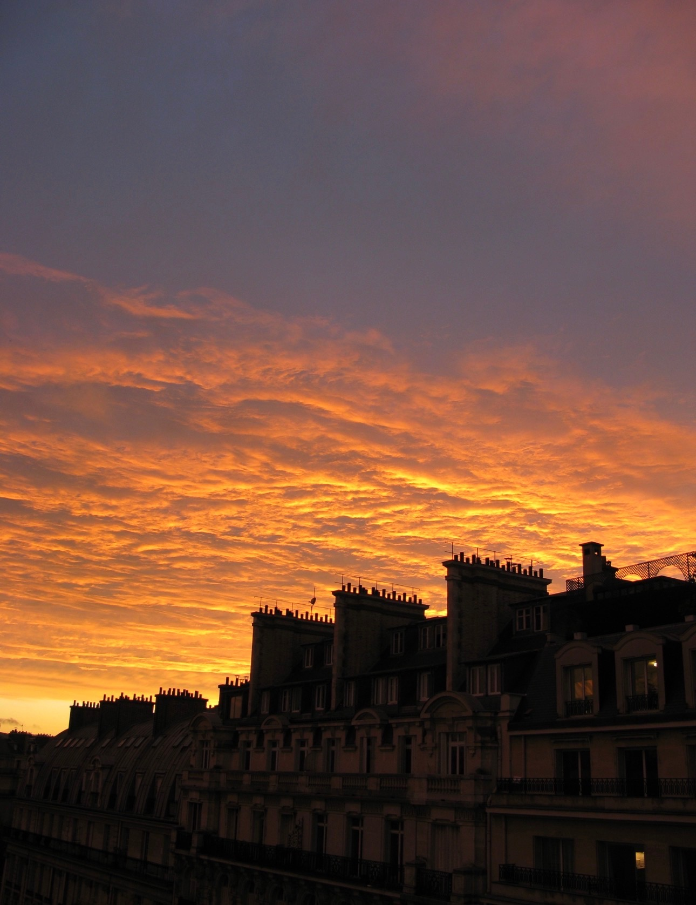

Words that search for meaning

Having lived across North America, the Middle East, Europe, and Asia, I have gathered experiences and perspectives that profoundly shape the way I view the world. Writing has become a form of preservation of these memories. This website is a collection of the works that mean the most to me.
"Sea Life" was inspired by my childhood in Bodrum, while "They Said The Sky Was Blue" emerged after I first read "The Handmaid's Tale" shortly after moving to Paris. "Between Two Worlds" reflects the emotions I experienced when I moved to Asia after growing up in Istanbul. Together, these pieces of writing trace back to not only different geographical places in my life, but also the gradual shaping of my identity through change.